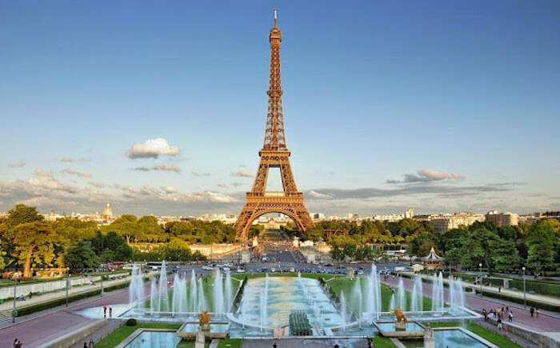
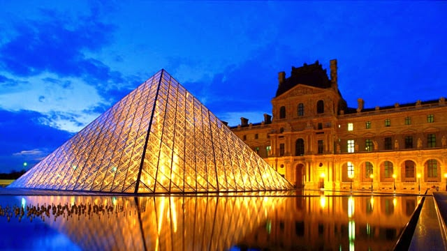
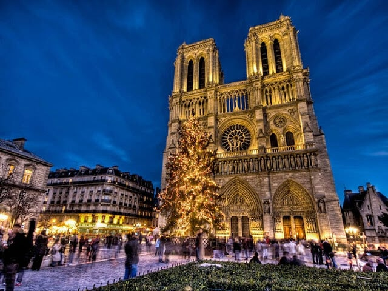

Torre Eiffel

A Torre Eiffel é o grande símbolo de Paris e foi construída por Gustave Eiffel em 1889 pra celebrar os 100 anos da Revolução Francesa. São 330 metros de altura, 1.665 degraus e ela se manteve como a construção mais alta do mundo até 1930. Hoje é o ponto turístico pago mais visitado do planeta.
Museu do Louvre

O Museu do Louvre é o maior e mais visitado museu do mundo. Fica entre o Rio Sena e a Avenida Champs-Élysées, com um acervo de mais de 380 mil objetos do antigo Egito até pinturas modernas. Os destaques: a Mona Lisa, a Vênus de Milo e a Vitória de Samotrácia.
Catedral de Notre-Dame

A Catedral de Notre-Dame é uma das catedrais góticas mais antigas e icônicas do mundo, construída há oito séculos em homenagem à Virgem Maria.
Arco do Triunfo

O Arco do Triunfo foi construído a mando de Napoleão em 1806 e é um marco da história francesa. Nas paredes estão gravados os nomes de centenas de militares que lutaram com Bonaparte, e aos pés do monumento está o túmulo do Soldado Desconhecido, desde 1920.